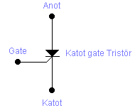
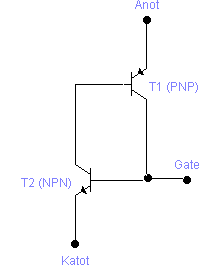
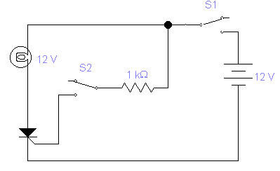

Tristör ve Ölçümleri
Yapısı :
Tristörler üzerinden sadece bir yönde akım geçmesini sağlayan yarı iletken bir devre elemanıdır. PNPN yapıdadır ve üzerinde üç adet uç bulunur. Bunlar katot, anot ve gate (tetikleme) uçlarıdır. İletken olduğu anda üzerindeki akımı katotdan anoda doğru geçirir. Gate ucu ise tristörün iletime geçirilmesi için kullanılır. Eğer tristör katot gate’li ise pozitif gerilim ile tetiklenir. Anot gate’li tristörler ise katoda göre daha negatif bir gerilim verildiğinden tetiklenirler.

Resimde Katot gate’li bir tristörün devre çizimlerinde kullanılan şekli görülmektedir.Tristörler devre üzerinde kullanılırken anot ucuna pozitif katot ucunada negatif bir gerilim uygulanır. Bu durumda tristör yalıtkandır ve üzerinden herhangi bir akım geçirmez. Tristörün iletime geçebilmesi için gate ucuna tristörün hassasiyetine bağlı olarak küçük bir pozitif gerilim uygulamak gerekir. Artık tristör tetiklenmiştir ve bu tetikleme işlemi saniyenin binde birinde gerçekleşir. Tristör tetiklendiğinde iç direnci yaklaşık 0.2 ohm gibi bir değere düşer.
Teorik olarak tristör bu şekilde tetiklenebilsede pratikte bu tetikleme işlemi sonucunda tristör arızalanır çünkü tristörün üzerinden geçen akımı harcayacak ve tristörü koruyacak bir yük elemanı bulunmamaktadır. Pratikte tristörün anot ucuna tristör üzerinden geçecek olan akımı üzerinde harcayacak bir yük elemanı bağlanmalıdır. Bu eleman genellikle devrenin amacına uygun olarak bir lamba, motor veya buna benzer yük elemanıdır.
Tristörlarin iki türlü çalışma şekli vardır. Birincisi DC akım ile çalıştırmadır. Bu şekilde çalıştırılan bir tristör doğru balantılar yapıldıktan sonra gate ucuna verilecek tetikleme sinyali ile iletime geçer ve tetikleme sinyali ortadan kalksa bile iletkenliği devam eder. Tristörü iletimden çıkarmak için devreye uygulanan gerilimin kesilmesi gerekir.
İkinci yöntem ise AC akım ile çalıştırmadır. Bilindiği üzere AC akım çift yönlü bir akımdır yani AC akım kaynağının frekansına göre kaynaktan alınan akım bir süre pozitif bir sürede negatif akım olarak çıkar. İşte bu çalıştırma anında tristörün anodu pozitif katoduda negatif pulsleri aldığı zaman gate ucuna bir tetikleme yapılırsa tristör bu puls boyunca iletime geçer. AC akım yön değiştirdiğinde ise tristör yalıtkandır. Bu durum AC akımın frekansına göre çeşitli hızlarda gerçekleşir. Örneğin AC akım 50 Hz ise tristörde saniyede 50 defa iletken ve yalıtkan durumuna geçer. Bu şekil çalıştırmada gate ucuna verilen tetikleme sinyali sürekli olmalıdır aksi halde tristör AC akımın ilk yön değiştirdiği anda yalıtkan olur ve bir daha iletime geçmez.
Yapı olarak tristör iki adet transistörden oluşan bir devre elemanıdır. Detayına girmeden sadece bilgi vermek amacıyla tristörün transistörler ile yapılmış eşdeğer devresini aşağıdaki resimde veriyorum.

Sağlamlık Kontrolü :
Tristörler ölçü alaetleri ile ölçülebileceği gibi basit bir tristör kontrol devresi ilede ölçülebilir. Öncelikle bu şekilde yapılacak kontrol için gerekli yöntemi ve devre şemasını vermek istiyorum.

Devrede yük olarak 12V ampül kullanılmıştır. S1 anahtarı kapatıldığında devreye 12V DC verilmiş olur ancak tristör henüz iletken değildir ve lamba yanmaz. S2 anahtarı kapatıldığında 1 Kohm’luk direnç ile düşürülen ve gate tetiklemesi olarak kullanılacak olan pozitif gerilim tristörün gate ucuna uygulanır. Bu durmda tristör gerekli tetikleme sinyalini aldığından iletime geçecek ve yük üzerinden akımın akmasına izin verecektir. Şu anda lamba yanmaktadır. Artık S2 anahtarı açılsa bile tristör iletimde kalmaya devam edecektir. Tristörü iletimden çıkarmak için S1 anahtarı açılarak devre gerilimi kesilmelidir. S1 anahtarı tekrar kapatıldığında lamba yine yanmayacaktır çünkü gate ucundan tetikleme voltajı veren S2 anahtarı açıktır. Eğer burada bahsedilenler doğru olarak gerçekleşiyorsa tristör sağlamdır.
S1 anahtarı kapatılır kapatılmaz lamba yanıyorsa veya gate ucuna tetikleme sinyali verildiği halde lamba yanmıyorsa tristör arızalı demektir.
Bu devrede 12V DC yerine 12V AC kullanılmış olsaydı S1 anahtarı kapatıldığında lamba yine yanmayacaktı ve S2 anahtarı kapatıldığında lamba yanacaktı ancak burada bir fark var; S2 anahtarı açıldığı anda lamba sönecektir çünkü AC akımın ilk negatif palsinde tristör iletkenliğini kaybedecektir. Lambanın sürekli yanması için S2 anahtarının da sürekli kapalı kalması gerekmektedir. AC akım kullanıldığında tristör AC akımın sadece pozitif palslerde iletime geçeceğinden lamba DC akım kullanılan devreye göre daha sönük yanacaktır.
İkinci yöntem olan ölçü aleti kullanarak tristörü ölçmek için ölçülecek bir tristör ve bir Ohm Metreye ihtiyaç vardır. Ölçü aleti X1 konumuna alınarak siyah ucu tristörün anoduna bağlanır. Kırmızı uç ise katoda bağlanır. Bu durumda ölçü aletinde herhangi bir değer okunmaması gerekir. Eğer düşük bir direnç veya kısa devre gözleniyorsa tristörün anot-katot arası kısa devre olmuş demektir ki bu da tristörün arızalı olduğunu gösterir. Eğer bu ölçümde bir hata yoksa şimdi sıra gate ucunun sağlamlığını ölçmeye geldi. Kırmızı ve siyah uçlar tristöre bağlı iken siyah uç anotdan ayrılmadan aynı anda gate ucuna değdirildiğinde tristör tetiklenmiş olur ve ölçü aletinde çok düşük bir direnç hatta kısa devre görülür. Bu durumda tristör tetiklenmiştir, anot-katot arası iletken olmuştur ve gate ucu sağlamdır. Şimdi gate ucuna değdirilen siyah uc ayrılır ve ölçü aletinde hala aynı sapmanın olduğu görülür. Bu da tristörün bir kez tetiklendikten sonra tetikleme kesilse bile iletimde kaldığını gösterir. Eğer gate ucu ayrıldığında ölçü aletide yüksek bir direnç veya açık devre gösteriyorsa tritör arızalıdır veya gate ucu değdirildiği halde ölçü aletinde bir sapma olmuyorsa tristör yine arızalıdır.
Ölçü aletinin siyah ucu tristörün gate ucuna kırmızı ucuda katoda bağlandığında çok düşük bir direnç (40 Ohm civarında) okunmalı. Uçlar tes çevrildiğinde ise maximum direnç (açık devre) okunmalı. Ayrıca Anot-Gate ve Anot-Katot ölçümleri her iki yönde de maximum direnç (açık devre) göstermelidir.